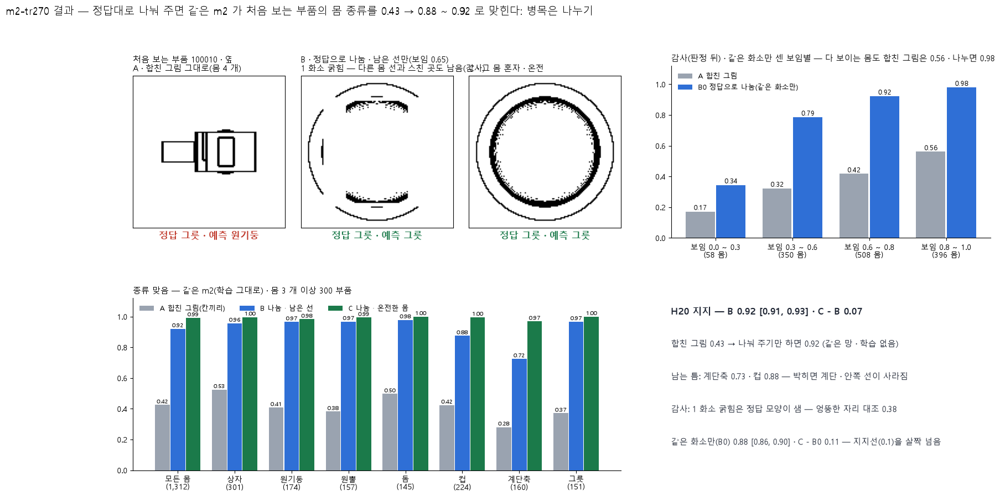

실험 m2_tr0270_h020_천장
목표 G1.2 view 모음 → 파츠별 CAD code(CadQuery · 그 전 「3 면도 → 파츠별 CAD」 · 지금 M2 는 위 · 앞 · 옆 고정 세 장만 받음 → 아무 각도 N 장으로 바꿀 것 · 11-20) · G1 첫 제품 — 피규어 · 메카 사진 여러 장 + 치수 → 숨은선 3 면도 + 파츠별 CAD · G0 임의의 이미지 → CAD 코드 · 빌린 가정 3: 생성기기하 · 정답3D · 정사영 · 갚는 계획: 관문(D0 천장) · 정답 나누기 · 깨끗한 정답 3면도 · 생성기 부품 — 나누는 방법을 고르면 그 방법의 나누기로 다시 잼 · 목표 시험지 값: 안 잼 (!)
몸을 정답대로 나눠 주면(합친 그림에 남은 선만으로) m2 가 처음 보는 부품의 몸 종류를 맞히나 — 나누기만 풀면 되나, 박혀 잃은 정보도 모자라나?
판정 · H20 지지(미리 정한 B 0.92 · C - B 0.07) — 단 감사에서 B 셈이 약 0.04 부풂(엄한 B0 0.88 · C - B0 0.11) · 정답대로 나누기만 하면 같은 m2 가 처음 보는 부품 몸 종류를 0.43 → 0.88 ~ 0.92 · 다 보이는 몸 0.56 → 0.98 · 병목은 나누기 · 남는 약 0.1 은 박혀 사라진 선(계단축 · 컵) · 다음: 나누는 방법들(마스크 질의 · 벗겨내기 · 선 묶기 → 몸 하나 분류)을 B0 를 천장으로 나란히
| 가설 | 주장 | 결과 | 근거 |
|---|---|---|---|
| H20 | 정답대로 나눠 주기만 하면, 박혀 잃은 선이 있어도 m2 는 몸 종류를 거의 맞힌다 — 병목은 나누기뿐 | 지지 | A 합친 그림 0.425 · C 온전한 몸 0.992 · 몸 하나로 읽음 B 0.82 · C 0.95 · 종류별 A / B / C 상자 0.53 / 0.96 / 1.00 · 원기둥 0.41 / 0.97 / 0.98 · 원뿔 0.38 / 0.97 / 0.99 · 돔 0.50 / 0.98 / 1.00 · 컵 0.42 / 0.88 / 1.00 · 계단축 0.28 / 0.73 / 0.97 · 그릇 0.37 / 0.97 / 1.00 · 판정 뒤 감사(판정 아님): 1 화소 굵힘은 다른 몸 선과 스친 곳도 남겨 정답 모양이 샘 — 몸 자리를 20 화소 엉뚱하게 옮긴 대조 Bs 0.38 [0.35, 0.41](보임 0.19) · 같은 화소만 센 B0 0.878 [0.859, 0.896](보임 0.68) · C - B0 0.114 · B0 보임별 [몸 · B0 · A] 0 ~ 0.3 [58 · 0.34 · 0.17] · 0.3 ~ 0.6 [350 · 0.79 · 0.32] · 0.6 ~ 0.8 [508 · 0.92 · 0.42] · 0.8 ~ 1.0 [396 · 0.98 · 0.56] |
분석
한 줄로
물음: 몸을 정답대로 나눠서 하나씩 넣어 주면, 같은 m2 가 처음 보는 부품의 몸 종류를 맞히나? 나누기만 풀면 되나, 박혀서 잃은 선 때문에 모자라나?
답: 맞힌다(H20 지지). 같은 망 · 학습 없이 0.43 → 0.92 다. 다만 감사에서 이 셈이 약 0.04 부풀었음을 찾았다. 더 엄하게 세면 0.88 이고, 온전한 몸(0.99)과의 차가 0.11 로 지지선(0.1)을 살짝 넘는다. 병목은 나누기다. 남는 약 0.1 은 박혀 사라진 선(계단 · 컵 안쪽) 몫이다.
왜 이 실험을 했나
m2-tr269 에서 잘 보이는 몸도 합친 그림에서는 절반만 맞혔다(나누기 문제). 조사(claudedocs/research_몸나누기_20261121.md)는 나누는 방법을 시험하기 전에 「정답으로 나눴을 때의 천장」 부터 재라고 권했다. 천장이 낮으면 나누기를 잘해도 소용이 없기 때문이다.
바꾼 것 하나
m2 에 넣는 그림. 합친 그림(A) 대신 몸을 하나씩 넣었다. C 는 그 몸 혼자 그린 온전한 3면도(몸 1 개 부품과 같은 정규화)다. B 는 C 에서 합친 그림에 없는 선(박힘 · 가려짐)을 지운 것이다. 몸 1 개 부품은 C 가 m2 입력과 화소까지 같음을 먼저 확인했다. 망 · 부품은 m2-tr269 그대로다(몸 3 개 이상 300 부품 · 몸 1,312).
결과

| 몸 1,312 | 종류 맞음 |
|---|---|
| A 합친 그림 그대로 | 0.43 |
| B 정답으로 나눔 · 남은 선(1 화소 굵힘 · 판정 셈) | 0.92 |
| B0 정답으로 나눔 · 같은 화소만(감사) | 0.88 |
| C 그 몸 혼자 · 온전 | 0.99 |
| 대조 Bs 엉뚱한 자리로 센 B(새는 양) | 0.38 |
| 가설 | 결과 | 판정선 | 판정 |
|---|---|---|---|
| H20 B 종류 맞음 · C - B | 0.92 [0.91, 0.93] · 0.07 | B ≥ 0.85 이고 C - B ≤ 0.1 지지 · 위 < 0.75 기각 | 지지 |
왜 이렇게 나왔나
확인한 것
- 다 보이는 몸에서 차이가 가장 뚜렷하다. 같은 화소로 센 보임이 0.8 이상인 396 몸은 합친 그림에서 0.56, 나누면 0.98 이다. 그림에 정보가 있는데 합쳐지면 못 읽는다.
- 많이 박힌 몸은 나눠도 떨어진다(보임 0.3 아래 0.34). 종류로는 계단축 0.73 · 컵 0.88 이 낮다. 박히면 계단과 컵 안쪽 선이 사라진다.
- 감사: 판정 셈(B)은 1 화소 안에 합친 그림 선이 있으면 남겼다. 그래서 다른 몸 선과 스친 곳도 남아 정답 윤곽이 샜다. 몸 자리를 엉뚱하게 옮겨 센 대조가 0.38 이었다. 같은 화소만 센 B0 는 0.88 이다.
짐작 (아직 확인 안 함)
- 나누는 방법이 B0 에 가깝게 나누면, 처음 보는 부품 몸 종류가 0.85 근처까지 오를 수 있다. 남은 0.1 은 사라진 선이라, 다른 장 · 숨은선 같은 정보 쪽 손잡이가 필요할 것이다.
한계
- 학습 없이 정답 나누기를 쓴 천장이다. 실제 나누는 방법은 이보다 낮다.
- B · B0 는 끊긴 선 그림이라 m2 에게 처음 보는 꼴이다(낮게 나올 쪽). 합칠 때 새로 생기는 교선은 넣지 않았다.
- 판정 셈이 약 0.04 부풀었다. 엄한 셈(B0)으로는 C - B0 가 0.11 로 지지선을 살짝 넘어, 엄하게 보면 보류에 가깝다.
- m2-tr269 의 보임도 같은 1 화소 굵힘이라 우연히 스친 선만큼(엉뚱한 자리 대조 0.19) 부풀었다. 같은 화소로 센 다 보이는 몸에서도 합친 그림 0.56 이라 그 결론(나누기 문제)은 그대로다.
배운 것과 다음
정답대로 나누기만 하면 같은 m2 가 처음 보는 부품의 몸 종류를 0.43 → 0.88 로 맞힌다. 고칠 곳은 나누기다.
- 나누는 방법들을 같은 조건(학습 1.2 만 · 처음 보는 3,000 · 몸 셋 이상)에서 나란히 시험한다. 천장은 B0(0.88)로 둔다. 후보: 마스크 질의 · 캔버스 벗겨내기 · 선 묶기 → 몸 하나 분류.
- 계단 · 컵 안쪽처럼 박혀 사라진 선은 따로 본다(숨은선 · 다른 장).
실험 기록
- 카드 · 천장270.py(검사 · 흐름 · 그리기 · 재기 · 감사 · 그림) · 잼.json · 흐름.png · 결과.png · 원본 out/설명/캐드부품/모델270(팔.npz · 맞음.npz · 감사.npz)
- 검사: 몸 1 개 부품 C 대 m2 입력 화소 1.0 같음(3 부품) · B ⊂ C · B 보임이 m2-tr269 보임과 가까움(3 부품)